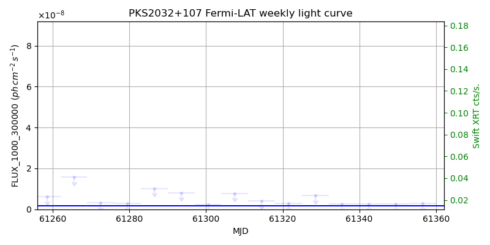

LAT Lightcurve site: https://fermi.gsfc.nasa.gov/ssc/data/access/lat/msl_lc/source/PKS_2032p107
Swift site: https://www.swift.psu.edu/monitoring/source.php?source=PKS2032+107
NED: Query
Time of last update of this page: UT: 2026-11-28 16:27 (MJD: 61372.686)
| Property | Value |
|---|---|
| R.A. | 20:35:22.32 |
| Dec. | 10:56:06.0 |
| z | 0.601 |
| 3FGL SpectrumType | PowerLaw |
| 3FGL PL Index | 2.47 |
| 3FGL Flux_100_300000 | 5.18e-08 1 / (s cm2) |
| 3FGL Flux_1000_300000 | 1.76e-09 1 / (s cm2) |
| 3FGL Flux >200 GeV | 7.38e-13 1 / (s cm2) |
| 3FGL Extrap. Crab >200 GeV | 0.00 |
| 3FGL Flux After EBL Absorption >200GeV | 7.49e-14 1 / (s cm2) |
| 3FGL EBL Crab Fraction >200GeV | 0.00 |
| MJD | dMJD | Flux | dFlux | Frac3FGL | FracCrab>200GeV | EBLFracCrab>200GeV |
|---|---|---|---|---|---|---|
| 61367.50 | 0.50 | 6.31e-08 | 0.00e+00 | 0.00 | 0.00 | 0.00 |
| 61368.50 | 0.50 | 1.57e-07 | 0.00e+00 | 0.00 | 0.00 | 0.00 |
| 61369.50 | 0.50 | 3.58e-08 | 0.00e+00 | 0.00 | 0.00 | 0.00 |
| 61370.50 | 0.50 | 2.92e-07 | 0.00e+00 | 0.00 | 0.00 | 0.00 |
| 61371.50 | 0.50 | 5.19e-08 | 0.00e+00 | 0.00 | 0.00 | 0.00 |

| MJD | dMJD | Flux | dFlux | Frac3FGL | FracCrab>200GeV | EBLFracCrab>200GeV |
|---|---|---|---|---|---|---|
| 61335.50 | 3.50 | 2.12e-08 | 0.00e+00 | 0.00 | 0.00 | 0.00 |
| 61342.50 | 3.50 | 2.17e-08 | 0.00e+00 | 0.00 | 0.00 | 0.00 |
| 61349.50 | 3.50 | 2.35e-07 | 0.00e+00 | 0.00 | 0.00 | 0.00 |
| 61356.50 | 3.50 | 1.62e-07 | 0.00e+00 | 0.00 | 0.00 | 0.00 |
| 61363.50 | 3.50 | 2.63e-08 | 0.00e+00 | 0.00 | 0.00 | 0.00 |

| MJD | dMJD | Flux | dFlux | Frac3FGL | FracCrab>200GeV | EBLFracCrab>200GeV |
|---|---|---|---|---|---|---|
| 61367.50 | 0.50 | 1.10e-08 | 0.00e+00 | 0.00 | 0.00 | 0.00 |
| 61368.50 | 0.50 | 1.20e-08 | 0.00e+00 | 0.00 | 0.00 | 0.00 |
| 61369.50 | 0.50 | 1.05e-08 | 0.00e+00 | 0.00 | 0.00 | 0.00 |
| 61370.50 | 0.50 | 1.03e-08 | 0.00e+00 | 0.00 | 0.00 | 0.00 |
| 61371.50 | 0.50 | 1.09e-08 | 0.00e+00 | 0.00 | 0.00 | 0.00 |

| MJD | dMJD | Flux | dFlux | Frac3FGL | FracCrab>200GeV | EBLFracCrab>200GeV |
|---|---|---|---|---|---|---|
| 61335.50 | 3.50 | 2.56e-09 | 0.00e+00 | 0.00 | 0.00 | 0.00 |
| 61342.50 | 3.50 | 2.75e-09 | 0.00e+00 | 0.00 | 0.00 | 0.00 |
| 61349.50 | 3.50 | 2.63e-09 | 0.00e+00 | 0.00 | 0.00 | 0.00 |
| 61356.50 | 3.50 | 2.84e-09 | 0.00e+00 | 0.00 | 0.00 | 0.00 |
| 61363.50 | 3.50 | 6.59e-09 | 0.00e+00 | 0.00 | 0.00 | 0.00 |
--------------------------------------------------------- Using user-supplied coords: 20:35:22.32 10:56:06.0 2000 --------------------------------------------------------- FLWO UT night of: 2026-11-29 Local Sid. @ Midnight: 04:08 Sunset (-15.0) (local, UT): 18:31 01:31 Sunrise (-15.0) (local, UT): 05:53 12:53 Moonrise (local, UT): 21:57 04:57 Moonset (local, UT): Moon phase: 0.72 --------------------------------------------------------- AzTime LSID UT Obj_el Obj_az Mn_el Mn_az Sep. --------------------------------------------------------- 18:31 22:39 01:31 55.0 240.7 -32.9 32.1 150.2 19:01 23:09 02:01 49.2 248.2 -29.4 38.9 150.2 19:31 23:39 02:31 43.2 254.3 -25.4 45.0 150.3 20:01 00:09 03:01 36.9 259.5 -21.0 50.6 150.3 20:31 00:39 03:31 30.6 264.1 -16.2 55.6 150.3 21:01 01:09 04:01 24.2 268.2 -11.1 60.2 150.4 21:31 01:39 04:31 17.8 272.2 -5.4 64.5 150.4 22:01 02:09 05:01 11.5 276.0 0.4 68.5 150.4 22:31 02:39 05:31 5.2 279.8 5.8 72.2 150.4 23:01 03:10 06:01 -0.5 283.8 11.6 75.8 150.4 23:31 03:40 06:31 -7.3 287.8 17.5 79.4 150.4 00:01 04:10 07:01 -13.4 292.2 23.6 82.9 150.5 00:31 04:40 07:31 -19.2 296.9 29.7 86.5 150.5 01:01 05:10 08:01 -24.8 302.1 35.8 90.3 150.5 01:31 05:40 08:31 -30.0 308.0 42.0 94.4 150.5 02:01 06:10 09:01 -34.8 314.6 48.1 99.1 150.6 02:31 06:40 09:31 -39.1 322.2 54.2 104.7 150.6 03:01 07:10 10:01 -42.6 330.8 60.1 111.7 150.7 03:31 07:40 10:31 -45.2 340.3 65.6 121.1 150.7 04:01 08:10 11:01 -46.9 350.7 70.5 134.7 150.8 04:31 08:40 11:31 -47.3 1.6 74.0 154.7 150.8 05:01 09:11 12:01 -46.5 12.3 75.2 181.1 150.9 05:31 09:41 12:31 -44.6 22.5 73.6 206.8 150.9 05:53 10:02 12:53 -42.6 29.3 71.0 221.2 151.0 --------------------------------------------------------- Dark hours >55 deg.: 0.00